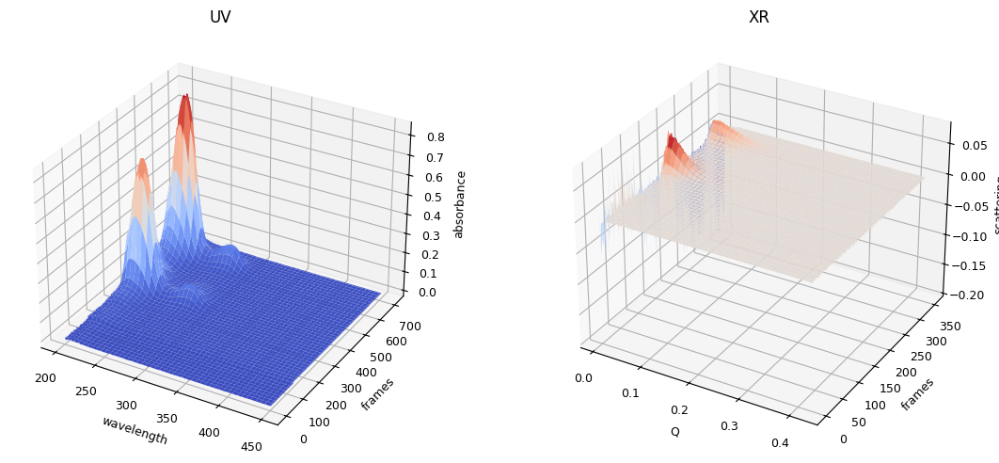
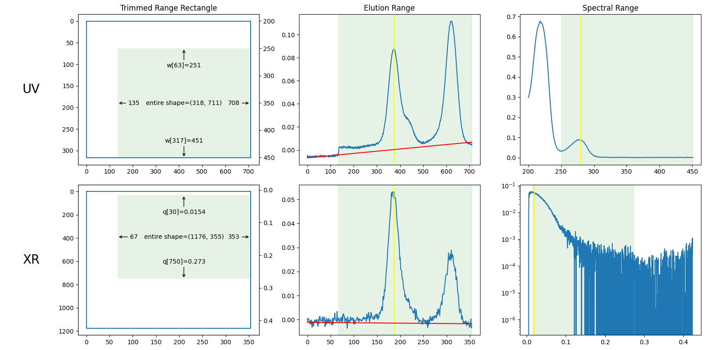
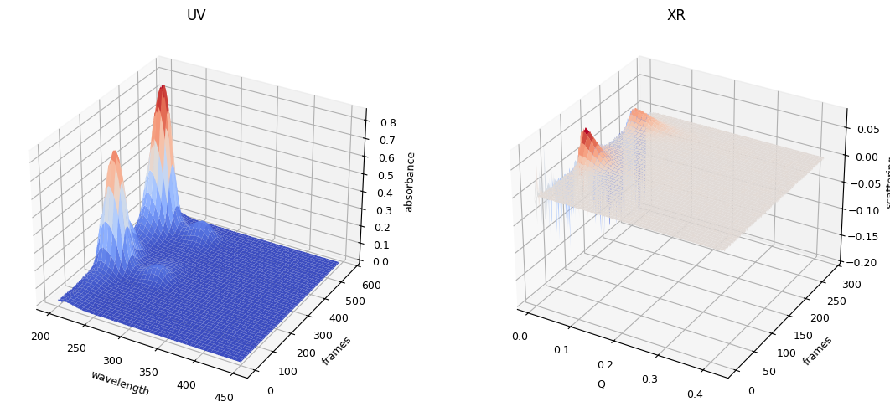
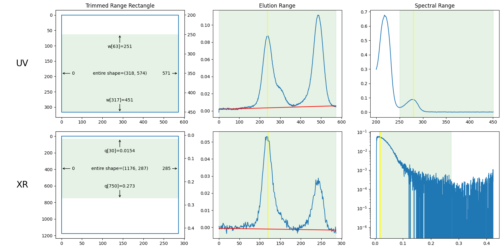

import matplotlib.pyplot as plt
from molass.Local import get_local_settings
local_settings = get_local_settings()
ORIGINAL_DATA = local_settings['ORIGINAL_DATA']
print(ORIGINAL_DATA)
E:\PyTools\Data\sample_data
6.1. Trimming#
from molass.Global.Options import set_molass_options
from molass.DataObjects import SecSaxsData as SSD
set_molass_options(flowchange=True)
original_data_folder = ORIGINAL_DATA
ssd0 = SSD(original_data_folder)
ssd0.plot_3d()
plot_result0 = ssd0.plot_trimming_info();


plot_result0.trimming.xr_slices, plot_result0.trimming.uv_slices
((slice(30, 751, None), slice(67, 354, None)),
(slice(63, None, None), slice(135, 709, None)))
import os
import tempfile
import shutil
from importlib import reload
import molass.DataUtils.UvFileTrimming
reload(molass.DataUtils.UvFileTrimming)
from molass.DataUtils.UvFileTrimming import trim_uvfile
# Define the temporary directory name
temp_dir = os.path.join(tempfile.gettempdir(), "tutorial_data")
# Clear the directory if it already exists
if os.path.exists(temp_dir):
shutil.rmtree(temp_dir)
# Create the temporary directory
os.makedirs(temp_dir)
print(f"Temporary directory created at: {temp_dir}")
uv_filename = "SAMPLE_UV280_01.txt"
in_uvfile = os.path.join(original_data_folder, uv_filename)
trimmed_uvfile = os.path.join(temp_dir, uv_filename)
jslice = plot_result0.trimming.uv_slices[1]
trim_uvfile(in_uvfile,
(slice(None, None), jslice), # slicing only the second axis
trimmed_uvfile)
Temporary directory created at: C:\Users\Owner\AppData\Local\Temp\tutorial_data
import os
import re
from molass.DataUtils.ZipFolder import zip_folder
from glob import glob
xr_islice = plot_result0.trimming.xr_slices[1]
start, stop = xr_islice.start, xr_islice.stop
n = 0
for k, path in enumerate(glob(original_data_folder + "/*.dat")):
if k >= start and k < stop:
basename = re.sub(r"_\d{5}_sub", "_%05d_"%n, os.path.basename(path))
target_path = os.path.join(temp_dir, basename)
shutil.copy(path, target_path)
print([k], "copying from %s to %s" % (path, basename))
n += 1
# Define the zip file name
zip_file = os.path.join(tempfile.gettempdir(), "tutorial_data.zip")
# # Zip the temp folder to zip_file
zip_folder(temp_dir, zip_file)
print(f"Temporary directory zipped at: {zip_file}")
[67] copying from E:\PyTools\Data\sample_data\SAMPLE_00067_sub.dat to SAMPLE_00000_.dat
[68] copying from E:\PyTools\Data\sample_data\SAMPLE_00068_sub.dat to SAMPLE_00001_.dat
[69] copying from E:\PyTools\Data\sample_data\SAMPLE_00069_sub.dat to SAMPLE_00002_.dat
[70] copying from E:\PyTools\Data\sample_data\SAMPLE_00070_sub.dat to SAMPLE_00003_.dat
[71] copying from E:\PyTools\Data\sample_data\SAMPLE_00071_sub.dat to SAMPLE_00004_.dat
[72] copying from E:\PyTools\Data\sample_data\SAMPLE_00072_sub.dat to SAMPLE_00005_.dat
[73] copying from E:\PyTools\Data\sample_data\SAMPLE_00073_sub.dat to SAMPLE_00006_.dat
[74] copying from E:\PyTools\Data\sample_data\SAMPLE_00074_sub.dat to SAMPLE_00007_.dat
[75] copying from E:\PyTools\Data\sample_data\SAMPLE_00075_sub.dat to SAMPLE_00008_.dat
[76] copying from E:\PyTools\Data\sample_data\SAMPLE_00076_sub.dat to SAMPLE_00009_.dat
[77] copying from E:\PyTools\Data\sample_data\SAMPLE_00077_sub.dat to SAMPLE_00010_.dat
[78] copying from E:\PyTools\Data\sample_data\SAMPLE_00078_sub.dat to SAMPLE_00011_.dat
[79] copying from E:\PyTools\Data\sample_data\SAMPLE_00079_sub.dat to SAMPLE_00012_.dat
[80] copying from E:\PyTools\Data\sample_data\SAMPLE_00080_sub.dat to SAMPLE_00013_.dat
[81] copying from E:\PyTools\Data\sample_data\SAMPLE_00081_sub.dat to SAMPLE_00014_.dat
[82] copying from E:\PyTools\Data\sample_data\SAMPLE_00082_sub.dat to SAMPLE_00015_.dat
[83] copying from E:\PyTools\Data\sample_data\SAMPLE_00083_sub.dat to SAMPLE_00016_.dat
[84] copying from E:\PyTools\Data\sample_data\SAMPLE_00084_sub.dat to SAMPLE_00017_.dat
[85] copying from E:\PyTools\Data\sample_data\SAMPLE_00085_sub.dat to SAMPLE_00018_.dat
[86] copying from E:\PyTools\Data\sample_data\SAMPLE_00086_sub.dat to SAMPLE_00019_.dat
[87] copying from E:\PyTools\Data\sample_data\SAMPLE_00087_sub.dat to SAMPLE_00020_.dat
[88] copying from E:\PyTools\Data\sample_data\SAMPLE_00088_sub.dat to SAMPLE_00021_.dat
[89] copying from E:\PyTools\Data\sample_data\SAMPLE_00089_sub.dat to SAMPLE_00022_.dat
[90] copying from E:\PyTools\Data\sample_data\SAMPLE_00090_sub.dat to SAMPLE_00023_.dat
[91] copying from E:\PyTools\Data\sample_data\SAMPLE_00091_sub.dat to SAMPLE_00024_.dat
[92] copying from E:\PyTools\Data\sample_data\SAMPLE_00092_sub.dat to SAMPLE_00025_.dat
[93] copying from E:\PyTools\Data\sample_data\SAMPLE_00093_sub.dat to SAMPLE_00026_.dat
[94] copying from E:\PyTools\Data\sample_data\SAMPLE_00094_sub.dat to SAMPLE_00027_.dat
[95] copying from E:\PyTools\Data\sample_data\SAMPLE_00095_sub.dat to SAMPLE_00028_.dat
[96] copying from E:\PyTools\Data\sample_data\SAMPLE_00096_sub.dat to SAMPLE_00029_.dat
[97] copying from E:\PyTools\Data\sample_data\SAMPLE_00097_sub.dat to SAMPLE_00030_.dat
[98] copying from E:\PyTools\Data\sample_data\SAMPLE_00098_sub.dat to SAMPLE_00031_.dat
[99] copying from E:\PyTools\Data\sample_data\SAMPLE_00099_sub.dat to SAMPLE_00032_.dat
[100] copying from E:\PyTools\Data\sample_data\SAMPLE_00100_sub.dat to SAMPLE_00033_.dat
[101] copying from E:\PyTools\Data\sample_data\SAMPLE_00101_sub.dat to SAMPLE_00034_.dat
[102] copying from E:\PyTools\Data\sample_data\SAMPLE_00102_sub.dat to SAMPLE_00035_.dat
[103] copying from E:\PyTools\Data\sample_data\SAMPLE_00103_sub.dat to SAMPLE_00036_.dat
[104] copying from E:\PyTools\Data\sample_data\SAMPLE_00104_sub.dat to SAMPLE_00037_.dat
[105] copying from E:\PyTools\Data\sample_data\SAMPLE_00105_sub.dat to SAMPLE_00038_.dat
[106] copying from E:\PyTools\Data\sample_data\SAMPLE_00106_sub.dat to SAMPLE_00039_.dat
[107] copying from E:\PyTools\Data\sample_data\SAMPLE_00107_sub.dat to SAMPLE_00040_.dat
[108] copying from E:\PyTools\Data\sample_data\SAMPLE_00108_sub.dat to SAMPLE_00041_.dat
[109] copying from E:\PyTools\Data\sample_data\SAMPLE_00109_sub.dat to SAMPLE_00042_.dat
[110] copying from E:\PyTools\Data\sample_data\SAMPLE_00110_sub.dat to SAMPLE_00043_.dat
[111] copying from E:\PyTools\Data\sample_data\SAMPLE_00111_sub.dat to SAMPLE_00044_.dat
[112] copying from E:\PyTools\Data\sample_data\SAMPLE_00112_sub.dat to SAMPLE_00045_.dat
[113] copying from E:\PyTools\Data\sample_data\SAMPLE_00113_sub.dat to SAMPLE_00046_.dat
[114] copying from E:\PyTools\Data\sample_data\SAMPLE_00114_sub.dat to SAMPLE_00047_.dat
[115] copying from E:\PyTools\Data\sample_data\SAMPLE_00115_sub.dat to SAMPLE_00048_.dat
[116] copying from E:\PyTools\Data\sample_data\SAMPLE_00116_sub.dat to SAMPLE_00049_.dat
[117] copying from E:\PyTools\Data\sample_data\SAMPLE_00117_sub.dat to SAMPLE_00050_.dat
[118] copying from E:\PyTools\Data\sample_data\SAMPLE_00118_sub.dat to SAMPLE_00051_.dat
[119] copying from E:\PyTools\Data\sample_data\SAMPLE_00119_sub.dat to SAMPLE_00052_.dat
[120] copying from E:\PyTools\Data\sample_data\SAMPLE_00120_sub.dat to SAMPLE_00053_.dat
[121] copying from E:\PyTools\Data\sample_data\SAMPLE_00121_sub.dat to SAMPLE_00054_.dat
[122] copying from E:\PyTools\Data\sample_data\SAMPLE_00122_sub.dat to SAMPLE_00055_.dat
[123] copying from E:\PyTools\Data\sample_data\SAMPLE_00123_sub.dat to SAMPLE_00056_.dat
[124] copying from E:\PyTools\Data\sample_data\SAMPLE_00124_sub.dat to SAMPLE_00057_.dat
[125] copying from E:\PyTools\Data\sample_data\SAMPLE_00125_sub.dat to SAMPLE_00058_.dat
[126] copying from E:\PyTools\Data\sample_data\SAMPLE_00126_sub.dat to SAMPLE_00059_.dat
[127] copying from E:\PyTools\Data\sample_data\SAMPLE_00127_sub.dat to SAMPLE_00060_.dat
[128] copying from E:\PyTools\Data\sample_data\SAMPLE_00128_sub.dat to SAMPLE_00061_.dat
[129] copying from E:\PyTools\Data\sample_data\SAMPLE_00129_sub.dat to SAMPLE_00062_.dat
[130] copying from E:\PyTools\Data\sample_data\SAMPLE_00130_sub.dat to SAMPLE_00063_.dat
[131] copying from E:\PyTools\Data\sample_data\SAMPLE_00131_sub.dat to SAMPLE_00064_.dat
[132] copying from E:\PyTools\Data\sample_data\SAMPLE_00132_sub.dat to SAMPLE_00065_.dat
[133] copying from E:\PyTools\Data\sample_data\SAMPLE_00133_sub.dat to SAMPLE_00066_.dat
[134] copying from E:\PyTools\Data\sample_data\SAMPLE_00134_sub.dat to SAMPLE_00067_.dat
[135] copying from E:\PyTools\Data\sample_data\SAMPLE_00135_sub.dat to SAMPLE_00068_.dat
[136] copying from E:\PyTools\Data\sample_data\SAMPLE_00136_sub.dat to SAMPLE_00069_.dat
[137] copying from E:\PyTools\Data\sample_data\SAMPLE_00137_sub.dat to SAMPLE_00070_.dat
[138] copying from E:\PyTools\Data\sample_data\SAMPLE_00138_sub.dat to SAMPLE_00071_.dat
[139] copying from E:\PyTools\Data\sample_data\SAMPLE_00139_sub.dat to SAMPLE_00072_.dat
[140] copying from E:\PyTools\Data\sample_data\SAMPLE_00140_sub.dat to SAMPLE_00073_.dat
[141] copying from E:\PyTools\Data\sample_data\SAMPLE_00141_sub.dat to SAMPLE_00074_.dat
[142] copying from E:\PyTools\Data\sample_data\SAMPLE_00142_sub.dat to SAMPLE_00075_.dat
[143] copying from E:\PyTools\Data\sample_data\SAMPLE_00143_sub.dat to SAMPLE_00076_.dat
[144] copying from E:\PyTools\Data\sample_data\SAMPLE_00144_sub.dat to SAMPLE_00077_.dat
[145] copying from E:\PyTools\Data\sample_data\SAMPLE_00145_sub.dat to SAMPLE_00078_.dat
[146] copying from E:\PyTools\Data\sample_data\SAMPLE_00146_sub.dat to SAMPLE_00079_.dat
[147] copying from E:\PyTools\Data\sample_data\SAMPLE_00147_sub.dat to SAMPLE_00080_.dat
[148] copying from E:\PyTools\Data\sample_data\SAMPLE_00148_sub.dat to SAMPLE_00081_.dat
[149] copying from E:\PyTools\Data\sample_data\SAMPLE_00149_sub.dat to SAMPLE_00082_.dat
[150] copying from E:\PyTools\Data\sample_data\SAMPLE_00150_sub.dat to SAMPLE_00083_.dat
[151] copying from E:\PyTools\Data\sample_data\SAMPLE_00151_sub.dat to SAMPLE_00084_.dat
[152] copying from E:\PyTools\Data\sample_data\SAMPLE_00152_sub.dat to SAMPLE_00085_.dat
[153] copying from E:\PyTools\Data\sample_data\SAMPLE_00153_sub.dat to SAMPLE_00086_.dat
[154] copying from E:\PyTools\Data\sample_data\SAMPLE_00154_sub.dat to SAMPLE_00087_.dat
[155] copying from E:\PyTools\Data\sample_data\SAMPLE_00155_sub.dat to SAMPLE_00088_.dat
[156] copying from E:\PyTools\Data\sample_data\SAMPLE_00156_sub.dat to SAMPLE_00089_.dat
[157] copying from E:\PyTools\Data\sample_data\SAMPLE_00157_sub.dat to SAMPLE_00090_.dat
[158] copying from E:\PyTools\Data\sample_data\SAMPLE_00158_sub.dat to SAMPLE_00091_.dat
[159] copying from E:\PyTools\Data\sample_data\SAMPLE_00159_sub.dat to SAMPLE_00092_.dat
[160] copying from E:\PyTools\Data\sample_data\SAMPLE_00160_sub.dat to SAMPLE_00093_.dat
[161] copying from E:\PyTools\Data\sample_data\SAMPLE_00161_sub.dat to SAMPLE_00094_.dat
[162] copying from E:\PyTools\Data\sample_data\SAMPLE_00162_sub.dat to SAMPLE_00095_.dat
[163] copying from E:\PyTools\Data\sample_data\SAMPLE_00163_sub.dat to SAMPLE_00096_.dat
[164] copying from E:\PyTools\Data\sample_data\SAMPLE_00164_sub.dat to SAMPLE_00097_.dat
[165] copying from E:\PyTools\Data\sample_data\SAMPLE_00165_sub.dat to SAMPLE_00098_.dat
[166] copying from E:\PyTools\Data\sample_data\SAMPLE_00166_sub.dat to SAMPLE_00099_.dat
[167] copying from E:\PyTools\Data\sample_data\SAMPLE_00167_sub.dat to SAMPLE_00100_.dat
[168] copying from E:\PyTools\Data\sample_data\SAMPLE_00168_sub.dat to SAMPLE_00101_.dat
[169] copying from E:\PyTools\Data\sample_data\SAMPLE_00169_sub.dat to SAMPLE_00102_.dat
[170] copying from E:\PyTools\Data\sample_data\SAMPLE_00170_sub.dat to SAMPLE_00103_.dat
[171] copying from E:\PyTools\Data\sample_data\SAMPLE_00171_sub.dat to SAMPLE_00104_.dat
[172] copying from E:\PyTools\Data\sample_data\SAMPLE_00172_sub.dat to SAMPLE_00105_.dat
[173] copying from E:\PyTools\Data\sample_data\SAMPLE_00173_sub.dat to SAMPLE_00106_.dat
[174] copying from E:\PyTools\Data\sample_data\SAMPLE_00174_sub.dat to SAMPLE_00107_.dat
[175] copying from E:\PyTools\Data\sample_data\SAMPLE_00175_sub.dat to SAMPLE_00108_.dat
[176] copying from E:\PyTools\Data\sample_data\SAMPLE_00176_sub.dat to SAMPLE_00109_.dat
[177] copying from E:\PyTools\Data\sample_data\SAMPLE_00177_sub.dat to SAMPLE_00110_.dat
[178] copying from E:\PyTools\Data\sample_data\SAMPLE_00178_sub.dat to SAMPLE_00111_.dat
[179] copying from E:\PyTools\Data\sample_data\SAMPLE_00179_sub.dat to SAMPLE_00112_.dat
[180] copying from E:\PyTools\Data\sample_data\SAMPLE_00180_sub.dat to SAMPLE_00113_.dat
[181] copying from E:\PyTools\Data\sample_data\SAMPLE_00181_sub.dat to SAMPLE_00114_.dat
[182] copying from E:\PyTools\Data\sample_data\SAMPLE_00182_sub.dat to SAMPLE_00115_.dat
[183] copying from E:\PyTools\Data\sample_data\SAMPLE_00183_sub.dat to SAMPLE_00116_.dat
[184] copying from E:\PyTools\Data\sample_data\SAMPLE_00184_sub.dat to SAMPLE_00117_.dat
[185] copying from E:\PyTools\Data\sample_data\SAMPLE_00185_sub.dat to SAMPLE_00118_.dat
[186] copying from E:\PyTools\Data\sample_data\SAMPLE_00186_sub.dat to SAMPLE_00119_.dat
[187] copying from E:\PyTools\Data\sample_data\SAMPLE_00187_sub.dat to SAMPLE_00120_.dat
[188] copying from E:\PyTools\Data\sample_data\SAMPLE_00188_sub.dat to SAMPLE_00121_.dat
[189] copying from E:\PyTools\Data\sample_data\SAMPLE_00189_sub.dat to SAMPLE_00122_.dat
[190] copying from E:\PyTools\Data\sample_data\SAMPLE_00190_sub.dat to SAMPLE_00123_.dat
[191] copying from E:\PyTools\Data\sample_data\SAMPLE_00191_sub.dat to SAMPLE_00124_.dat
[192] copying from E:\PyTools\Data\sample_data\SAMPLE_00192_sub.dat to SAMPLE_00125_.dat
[193] copying from E:\PyTools\Data\sample_data\SAMPLE_00193_sub.dat to SAMPLE_00126_.dat
[194] copying from E:\PyTools\Data\sample_data\SAMPLE_00194_sub.dat to SAMPLE_00127_.dat
[195] copying from E:\PyTools\Data\sample_data\SAMPLE_00195_sub.dat to SAMPLE_00128_.dat
[196] copying from E:\PyTools\Data\sample_data\SAMPLE_00196_sub.dat to SAMPLE_00129_.dat
[197] copying from E:\PyTools\Data\sample_data\SAMPLE_00197_sub.dat to SAMPLE_00130_.dat
[198] copying from E:\PyTools\Data\sample_data\SAMPLE_00198_sub.dat to SAMPLE_00131_.dat
[199] copying from E:\PyTools\Data\sample_data\SAMPLE_00199_sub.dat to SAMPLE_00132_.dat
[200] copying from E:\PyTools\Data\sample_data\SAMPLE_00200_sub.dat to SAMPLE_00133_.dat
[201] copying from E:\PyTools\Data\sample_data\SAMPLE_00201_sub.dat to SAMPLE_00134_.dat
[202] copying from E:\PyTools\Data\sample_data\SAMPLE_00202_sub.dat to SAMPLE_00135_.dat
[203] copying from E:\PyTools\Data\sample_data\SAMPLE_00203_sub.dat to SAMPLE_00136_.dat
[204] copying from E:\PyTools\Data\sample_data\SAMPLE_00204_sub.dat to SAMPLE_00137_.dat
[205] copying from E:\PyTools\Data\sample_data\SAMPLE_00205_sub.dat to SAMPLE_00138_.dat
[206] copying from E:\PyTools\Data\sample_data\SAMPLE_00206_sub.dat to SAMPLE_00139_.dat
[207] copying from E:\PyTools\Data\sample_data\SAMPLE_00207_sub.dat to SAMPLE_00140_.dat
[208] copying from E:\PyTools\Data\sample_data\SAMPLE_00208_sub.dat to SAMPLE_00141_.dat
[209] copying from E:\PyTools\Data\sample_data\SAMPLE_00209_sub.dat to SAMPLE_00142_.dat
[210] copying from E:\PyTools\Data\sample_data\SAMPLE_00210_sub.dat to SAMPLE_00143_.dat
[211] copying from E:\PyTools\Data\sample_data\SAMPLE_00211_sub.dat to SAMPLE_00144_.dat
[212] copying from E:\PyTools\Data\sample_data\SAMPLE_00212_sub.dat to SAMPLE_00145_.dat
[213] copying from E:\PyTools\Data\sample_data\SAMPLE_00213_sub.dat to SAMPLE_00146_.dat
[214] copying from E:\PyTools\Data\sample_data\SAMPLE_00214_sub.dat to SAMPLE_00147_.dat
[215] copying from E:\PyTools\Data\sample_data\SAMPLE_00215_sub.dat to SAMPLE_00148_.dat
[216] copying from E:\PyTools\Data\sample_data\SAMPLE_00216_sub.dat to SAMPLE_00149_.dat
[217] copying from E:\PyTools\Data\sample_data\SAMPLE_00217_sub.dat to SAMPLE_00150_.dat
[218] copying from E:\PyTools\Data\sample_data\SAMPLE_00218_sub.dat to SAMPLE_00151_.dat
[219] copying from E:\PyTools\Data\sample_data\SAMPLE_00219_sub.dat to SAMPLE_00152_.dat
[220] copying from E:\PyTools\Data\sample_data\SAMPLE_00220_sub.dat to SAMPLE_00153_.dat
[221] copying from E:\PyTools\Data\sample_data\SAMPLE_00221_sub.dat to SAMPLE_00154_.dat
[222] copying from E:\PyTools\Data\sample_data\SAMPLE_00222_sub.dat to SAMPLE_00155_.dat
[223] copying from E:\PyTools\Data\sample_data\SAMPLE_00223_sub.dat to SAMPLE_00156_.dat
[224] copying from E:\PyTools\Data\sample_data\SAMPLE_00224_sub.dat to SAMPLE_00157_.dat
[225] copying from E:\PyTools\Data\sample_data\SAMPLE_00225_sub.dat to SAMPLE_00158_.dat
[226] copying from E:\PyTools\Data\sample_data\SAMPLE_00226_sub.dat to SAMPLE_00159_.dat
[227] copying from E:\PyTools\Data\sample_data\SAMPLE_00227_sub.dat to SAMPLE_00160_.dat
[228] copying from E:\PyTools\Data\sample_data\SAMPLE_00228_sub.dat to SAMPLE_00161_.dat
[229] copying from E:\PyTools\Data\sample_data\SAMPLE_00229_sub.dat to SAMPLE_00162_.dat
[230] copying from E:\PyTools\Data\sample_data\SAMPLE_00230_sub.dat to SAMPLE_00163_.dat
[231] copying from E:\PyTools\Data\sample_data\SAMPLE_00231_sub.dat to SAMPLE_00164_.dat
[232] copying from E:\PyTools\Data\sample_data\SAMPLE_00232_sub.dat to SAMPLE_00165_.dat
[233] copying from E:\PyTools\Data\sample_data\SAMPLE_00233_sub.dat to SAMPLE_00166_.dat
[234] copying from E:\PyTools\Data\sample_data\SAMPLE_00234_sub.dat to SAMPLE_00167_.dat
[235] copying from E:\PyTools\Data\sample_data\SAMPLE_00235_sub.dat to SAMPLE_00168_.dat
[236] copying from E:\PyTools\Data\sample_data\SAMPLE_00236_sub.dat to SAMPLE_00169_.dat
[237] copying from E:\PyTools\Data\sample_data\SAMPLE_00237_sub.dat to SAMPLE_00170_.dat
[238] copying from E:\PyTools\Data\sample_data\SAMPLE_00238_sub.dat to SAMPLE_00171_.dat
[239] copying from E:\PyTools\Data\sample_data\SAMPLE_00239_sub.dat to SAMPLE_00172_.dat
[240] copying from E:\PyTools\Data\sample_data\SAMPLE_00240_sub.dat to SAMPLE_00173_.dat
[241] copying from E:\PyTools\Data\sample_data\SAMPLE_00241_sub.dat to SAMPLE_00174_.dat
[242] copying from E:\PyTools\Data\sample_data\SAMPLE_00242_sub.dat to SAMPLE_00175_.dat
[243] copying from E:\PyTools\Data\sample_data\SAMPLE_00243_sub.dat to SAMPLE_00176_.dat
[244] copying from E:\PyTools\Data\sample_data\SAMPLE_00244_sub.dat to SAMPLE_00177_.dat
[245] copying from E:\PyTools\Data\sample_data\SAMPLE_00245_sub.dat to SAMPLE_00178_.dat
[246] copying from E:\PyTools\Data\sample_data\SAMPLE_00246_sub.dat to SAMPLE_00179_.dat
[247] copying from E:\PyTools\Data\sample_data\SAMPLE_00247_sub.dat to SAMPLE_00180_.dat
[248] copying from E:\PyTools\Data\sample_data\SAMPLE_00248_sub.dat to SAMPLE_00181_.dat
[249] copying from E:\PyTools\Data\sample_data\SAMPLE_00249_sub.dat to SAMPLE_00182_.dat
[250] copying from E:\PyTools\Data\sample_data\SAMPLE_00250_sub.dat to SAMPLE_00183_.dat
[251] copying from E:\PyTools\Data\sample_data\SAMPLE_00251_sub.dat to SAMPLE_00184_.dat
[252] copying from E:\PyTools\Data\sample_data\SAMPLE_00252_sub.dat to SAMPLE_00185_.dat
[253] copying from E:\PyTools\Data\sample_data\SAMPLE_00253_sub.dat to SAMPLE_00186_.dat
[254] copying from E:\PyTools\Data\sample_data\SAMPLE_00254_sub.dat to SAMPLE_00187_.dat
[255] copying from E:\PyTools\Data\sample_data\SAMPLE_00255_sub.dat to SAMPLE_00188_.dat
[256] copying from E:\PyTools\Data\sample_data\SAMPLE_00256_sub.dat to SAMPLE_00189_.dat
[257] copying from E:\PyTools\Data\sample_data\SAMPLE_00257_sub.dat to SAMPLE_00190_.dat
[258] copying from E:\PyTools\Data\sample_data\SAMPLE_00258_sub.dat to SAMPLE_00191_.dat
[259] copying from E:\PyTools\Data\sample_data\SAMPLE_00259_sub.dat to SAMPLE_00192_.dat
[260] copying from E:\PyTools\Data\sample_data\SAMPLE_00260_sub.dat to SAMPLE_00193_.dat
[261] copying from E:\PyTools\Data\sample_data\SAMPLE_00261_sub.dat to SAMPLE_00194_.dat
[262] copying from E:\PyTools\Data\sample_data\SAMPLE_00262_sub.dat to SAMPLE_00195_.dat
[263] copying from E:\PyTools\Data\sample_data\SAMPLE_00263_sub.dat to SAMPLE_00196_.dat
[264] copying from E:\PyTools\Data\sample_data\SAMPLE_00264_sub.dat to SAMPLE_00197_.dat
[265] copying from E:\PyTools\Data\sample_data\SAMPLE_00265_sub.dat to SAMPLE_00198_.dat
[266] copying from E:\PyTools\Data\sample_data\SAMPLE_00266_sub.dat to SAMPLE_00199_.dat
[267] copying from E:\PyTools\Data\sample_data\SAMPLE_00267_sub.dat to SAMPLE_00200_.dat
[268] copying from E:\PyTools\Data\sample_data\SAMPLE_00268_sub.dat to SAMPLE_00201_.dat
[269] copying from E:\PyTools\Data\sample_data\SAMPLE_00269_sub.dat to SAMPLE_00202_.dat
[270] copying from E:\PyTools\Data\sample_data\SAMPLE_00270_sub.dat to SAMPLE_00203_.dat
[271] copying from E:\PyTools\Data\sample_data\SAMPLE_00271_sub.dat to SAMPLE_00204_.dat
[272] copying from E:\PyTools\Data\sample_data\SAMPLE_00272_sub.dat to SAMPLE_00205_.dat
[273] copying from E:\PyTools\Data\sample_data\SAMPLE_00273_sub.dat to SAMPLE_00206_.dat
[274] copying from E:\PyTools\Data\sample_data\SAMPLE_00274_sub.dat to SAMPLE_00207_.dat
[275] copying from E:\PyTools\Data\sample_data\SAMPLE_00275_sub.dat to SAMPLE_00208_.dat
[276] copying from E:\PyTools\Data\sample_data\SAMPLE_00276_sub.dat to SAMPLE_00209_.dat
[277] copying from E:\PyTools\Data\sample_data\SAMPLE_00277_sub.dat to SAMPLE_00210_.dat
[278] copying from E:\PyTools\Data\sample_data\SAMPLE_00278_sub.dat to SAMPLE_00211_.dat
[279] copying from E:\PyTools\Data\sample_data\SAMPLE_00279_sub.dat to SAMPLE_00212_.dat
[280] copying from E:\PyTools\Data\sample_data\SAMPLE_00280_sub.dat to SAMPLE_00213_.dat
[281] copying from E:\PyTools\Data\sample_data\SAMPLE_00281_sub.dat to SAMPLE_00214_.dat
[282] copying from E:\PyTools\Data\sample_data\SAMPLE_00282_sub.dat to SAMPLE_00215_.dat
[283] copying from E:\PyTools\Data\sample_data\SAMPLE_00283_sub.dat to SAMPLE_00216_.dat
[284] copying from E:\PyTools\Data\sample_data\SAMPLE_00284_sub.dat to SAMPLE_00217_.dat
[285] copying from E:\PyTools\Data\sample_data\SAMPLE_00285_sub.dat to SAMPLE_00218_.dat
[286] copying from E:\PyTools\Data\sample_data\SAMPLE_00286_sub.dat to SAMPLE_00219_.dat
[287] copying from E:\PyTools\Data\sample_data\SAMPLE_00287_sub.dat to SAMPLE_00220_.dat
[288] copying from E:\PyTools\Data\sample_data\SAMPLE_00288_sub.dat to SAMPLE_00221_.dat
[289] copying from E:\PyTools\Data\sample_data\SAMPLE_00289_sub.dat to SAMPLE_00222_.dat
[290] copying from E:\PyTools\Data\sample_data\SAMPLE_00290_sub.dat to SAMPLE_00223_.dat
[291] copying from E:\PyTools\Data\sample_data\SAMPLE_00291_sub.dat to SAMPLE_00224_.dat
[292] copying from E:\PyTools\Data\sample_data\SAMPLE_00292_sub.dat to SAMPLE_00225_.dat
[293] copying from E:\PyTools\Data\sample_data\SAMPLE_00293_sub.dat to SAMPLE_00226_.dat
[294] copying from E:\PyTools\Data\sample_data\SAMPLE_00294_sub.dat to SAMPLE_00227_.dat
[295] copying from E:\PyTools\Data\sample_data\SAMPLE_00295_sub.dat to SAMPLE_00228_.dat
[296] copying from E:\PyTools\Data\sample_data\SAMPLE_00296_sub.dat to SAMPLE_00229_.dat
[297] copying from E:\PyTools\Data\sample_data\SAMPLE_00297_sub.dat to SAMPLE_00230_.dat
[298] copying from E:\PyTools\Data\sample_data\SAMPLE_00298_sub.dat to SAMPLE_00231_.dat
[299] copying from E:\PyTools\Data\sample_data\SAMPLE_00299_sub.dat to SAMPLE_00232_.dat
[300] copying from E:\PyTools\Data\sample_data\SAMPLE_00300_sub.dat to SAMPLE_00233_.dat
[301] copying from E:\PyTools\Data\sample_data\SAMPLE_00301_sub.dat to SAMPLE_00234_.dat
[302] copying from E:\PyTools\Data\sample_data\SAMPLE_00302_sub.dat to SAMPLE_00235_.dat
[303] copying from E:\PyTools\Data\sample_data\SAMPLE_00303_sub.dat to SAMPLE_00236_.dat
[304] copying from E:\PyTools\Data\sample_data\SAMPLE_00304_sub.dat to SAMPLE_00237_.dat
[305] copying from E:\PyTools\Data\sample_data\SAMPLE_00305_sub.dat to SAMPLE_00238_.dat
[306] copying from E:\PyTools\Data\sample_data\SAMPLE_00306_sub.dat to SAMPLE_00239_.dat
[307] copying from E:\PyTools\Data\sample_data\SAMPLE_00307_sub.dat to SAMPLE_00240_.dat
[308] copying from E:\PyTools\Data\sample_data\SAMPLE_00308_sub.dat to SAMPLE_00241_.dat
[309] copying from E:\PyTools\Data\sample_data\SAMPLE_00309_sub.dat to SAMPLE_00242_.dat
[310] copying from E:\PyTools\Data\sample_data\SAMPLE_00310_sub.dat to SAMPLE_00243_.dat
[311] copying from E:\PyTools\Data\sample_data\SAMPLE_00311_sub.dat to SAMPLE_00244_.dat
[312] copying from E:\PyTools\Data\sample_data\SAMPLE_00312_sub.dat to SAMPLE_00245_.dat
[313] copying from E:\PyTools\Data\sample_data\SAMPLE_00313_sub.dat to SAMPLE_00246_.dat
[314] copying from E:\PyTools\Data\sample_data\SAMPLE_00314_sub.dat to SAMPLE_00247_.dat
[315] copying from E:\PyTools\Data\sample_data\SAMPLE_00315_sub.dat to SAMPLE_00248_.dat
[316] copying from E:\PyTools\Data\sample_data\SAMPLE_00316_sub.dat to SAMPLE_00249_.dat
[317] copying from E:\PyTools\Data\sample_data\SAMPLE_00317_sub.dat to SAMPLE_00250_.dat
[318] copying from E:\PyTools\Data\sample_data\SAMPLE_00318_sub.dat to SAMPLE_00251_.dat
[319] copying from E:\PyTools\Data\sample_data\SAMPLE_00319_sub.dat to SAMPLE_00252_.dat
[320] copying from E:\PyTools\Data\sample_data\SAMPLE_00320_sub.dat to SAMPLE_00253_.dat
[321] copying from E:\PyTools\Data\sample_data\SAMPLE_00321_sub.dat to SAMPLE_00254_.dat
[322] copying from E:\PyTools\Data\sample_data\SAMPLE_00322_sub.dat to SAMPLE_00255_.dat
[323] copying from E:\PyTools\Data\sample_data\SAMPLE_00323_sub.dat to SAMPLE_00256_.dat
[324] copying from E:\PyTools\Data\sample_data\SAMPLE_00324_sub.dat to SAMPLE_00257_.dat
[325] copying from E:\PyTools\Data\sample_data\SAMPLE_00325_sub.dat to SAMPLE_00258_.dat
[326] copying from E:\PyTools\Data\sample_data\SAMPLE_00326_sub.dat to SAMPLE_00259_.dat
[327] copying from E:\PyTools\Data\sample_data\SAMPLE_00327_sub.dat to SAMPLE_00260_.dat
[328] copying from E:\PyTools\Data\sample_data\SAMPLE_00328_sub.dat to SAMPLE_00261_.dat
[329] copying from E:\PyTools\Data\sample_data\SAMPLE_00329_sub.dat to SAMPLE_00262_.dat
[330] copying from E:\PyTools\Data\sample_data\SAMPLE_00330_sub.dat to SAMPLE_00263_.dat
[331] copying from E:\PyTools\Data\sample_data\SAMPLE_00331_sub.dat to SAMPLE_00264_.dat
[332] copying from E:\PyTools\Data\sample_data\SAMPLE_00332_sub.dat to SAMPLE_00265_.dat
[333] copying from E:\PyTools\Data\sample_data\SAMPLE_00333_sub.dat to SAMPLE_00266_.dat
[334] copying from E:\PyTools\Data\sample_data\SAMPLE_00334_sub.dat to SAMPLE_00267_.dat
[335] copying from E:\PyTools\Data\sample_data\SAMPLE_00335_sub.dat to SAMPLE_00268_.dat
[336] copying from E:\PyTools\Data\sample_data\SAMPLE_00336_sub.dat to SAMPLE_00269_.dat
[337] copying from E:\PyTools\Data\sample_data\SAMPLE_00337_sub.dat to SAMPLE_00270_.dat
[338] copying from E:\PyTools\Data\sample_data\SAMPLE_00338_sub.dat to SAMPLE_00271_.dat
[339] copying from E:\PyTools\Data\sample_data\SAMPLE_00339_sub.dat to SAMPLE_00272_.dat
[340] copying from E:\PyTools\Data\sample_data\SAMPLE_00340_sub.dat to SAMPLE_00273_.dat
[341] copying from E:\PyTools\Data\sample_data\SAMPLE_00341_sub.dat to SAMPLE_00274_.dat
[342] copying from E:\PyTools\Data\sample_data\SAMPLE_00342_sub.dat to SAMPLE_00275_.dat
[343] copying from E:\PyTools\Data\sample_data\SAMPLE_00343_sub.dat to SAMPLE_00276_.dat
[344] copying from E:\PyTools\Data\sample_data\SAMPLE_00344_sub.dat to SAMPLE_00277_.dat
[345] copying from E:\PyTools\Data\sample_data\SAMPLE_00345_sub.dat to SAMPLE_00278_.dat
[346] copying from E:\PyTools\Data\sample_data\SAMPLE_00346_sub.dat to SAMPLE_00279_.dat
[347] copying from E:\PyTools\Data\sample_data\SAMPLE_00347_sub.dat to SAMPLE_00280_.dat
[348] copying from E:\PyTools\Data\sample_data\SAMPLE_00348_sub.dat to SAMPLE_00281_.dat
[349] copying from E:\PyTools\Data\sample_data\SAMPLE_00349_sub.dat to SAMPLE_00282_.dat
[350] copying from E:\PyTools\Data\sample_data\SAMPLE_00350_sub.dat to SAMPLE_00283_.dat
[351] copying from E:\PyTools\Data\sample_data\SAMPLE_00351_sub.dat to SAMPLE_00284_.dat
[352] copying from E:\PyTools\Data\sample_data\SAMPLE_00352_sub.dat to SAMPLE_00285_.dat
[353] copying from E:\PyTools\Data\sample_data\SAMPLE_00353_sub.dat to SAMPLE_00286_.dat
Temporary directory zipped at: C:\Users\Owner\AppData\Local\Temp\tutorial_data.zip
ssd1 = SSD(temp_dir)
ssd1.plot_3d()
plot_result1 = ssd1.plot_trimming_info();


ssd2 = ssd0.trimmed_copy()
ssd2.plot_3d()
ssd2.plot_trimming_info()
<molass.PlotUtils.PlotResult.PlotResult at 0x2a2018c5250>
lr_info = ssd1.quick_lowrank_info(num_components=3, consistent_uv=True)
lr_info.plot_components();
developper memo: remember that "LowRank.CoupledAdjuster.select_components" is not implemented yet.
C:\Program Files\Python312\Lib\site-packages\molass\PlotUtils\LowRankInfoPlot.py:133: RuntimeWarning: invalid value encountered in log
logy = np.log(pv[slice_])
for i, ccurve in enumerate(lr_info.xr_ccurves):
print([i], ccurve.params)
[0] [5.33375190e-02 1.18383325e+02 1.12375404e+01 1.49006384e-01]
[1] [6.53516899e-03 1.46905984e+02 9.67977123e+00 3.97678763e+00]
[2] [ 2.74689527e-02 2.43103169e+02 1.12271272e+01 -3.14049514e+00]
for i, ccurve in enumerate(lr_info.uv_ccurves):
print([i], ccurve.params)
[0] [8.82040282e-02 2.35753506e+02 2.25664429e+01 2.99224203e-01]
[1] [2.86062497e-02 2.93030716e+02 1.94382398e+01 7.98590686e+00]
[2] [ 1.15902274e-01 4.86207177e+02 2.25455319e+01 -6.30652276e+00]